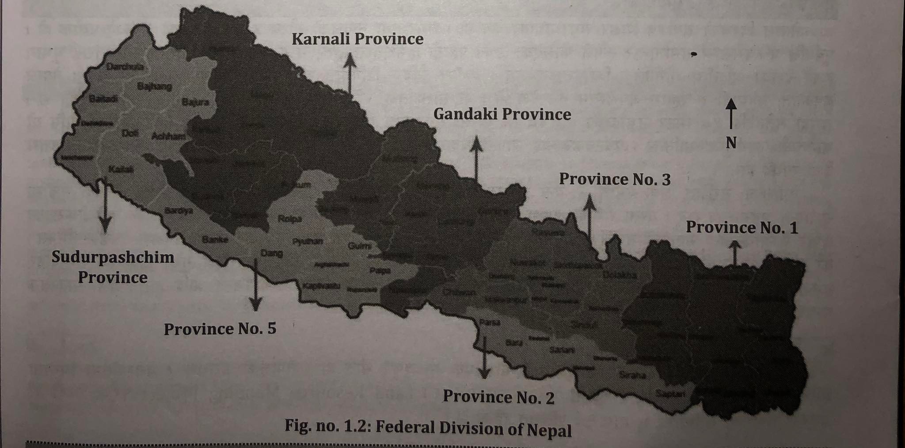

Administrative Division of Nepal
Subject: Social Studies

Overview
Administrative Division of Nepal
In Nepal, the unitary system of government had been in place for all of the country's recorded history. It was recently felt that it wasn't enough to support the nation's healthy expansion. A political transition in the nation was also signaled by the declaration of Nepal as a Federal Democratic Republican nation at the first session of the constituent assembly. With the proclamation of the Constitution of Nepal-2072, the federal system has received legitimacy, and Nepal is now formally a federal republic.
History of Administrative Division of Nepal
- During the reign of Prithvi Narayan Shah:
- Division of 12 regions (Gorkha, Sindhupalchowk, Salyan (along with Dhading). Nuwakot. Dolakha, Lamidanda, Kavrepalanchowk, Makwanpur, Bijayapur, Chaudandi, Majh Kirant, Pallo Kirant)
- During the time of Bhimsen Thapa:
- 39 Districts
- During Rana Rule:
- 35 Districts (During the rule of Bir Shumsher, 23 districts in hilly region and 12 Tahasils in Terai)
- 2018, Baishakh 11:
- 14 zones and 75 districts
- 2029, Ashar 13:
- With the purpose of balanced development, Nepal was divided into 4 development regions.
- 2037, Ashoj 26:
- Seti and Mahakali zones were declared as separate development region and declared as Far Western Development Region and total 5 development regions were created. 2074, Bhadra 5: Nawalpaarasi and Rukum districts were divided and altogether 77 districts were formed.
- 2072, Asoj 3:
- Along with the promulgation of Constitution of Nepal-2072, Nepal was converted into federal country with the division of 7 federal states.
- 2074, Bhadra 5:
- Nawalpaarasi and Rukum districts were divided and altogether 77 districts were formed. East of Bardaghat and Susta of Nawalparasi- district of inner Terai (Gandaki Province) and west of Bardaghat and Susta of Nawalparasi- district of outer Terai (Province no. 5). Similarly, east of Rukum - Himalayan District (province no. 5) and west of Rukum - Hilly district (province no. 6) were formed.
- Present:
- 21 districts in Himalayan region, 28 districts in Hilly region, 7 districts in Inner Terai. 18 districts in Main Terai and 3 districts in Kathmandu valley.
According to Part 5, Article 56 of the Constitution of Nepal 2072, the Federal Democratic Republic of Nepal is divided into three levels, namely the federation, the province, and the local level. It asserts that Nepal is a federation made up of 753 regional entities.
Administrative Units
- Federal State:
- The head of the federation is a ceremonial president, the prime minister has administrative authority, the speaker of the House of Representatives is in charge of the National Assembly, and the chief justice is in charge of the judiciary.
- Provincial Government:
- The area and organization of the federal unit created in conformity with the Constitution are referred to as the "province." There are provisions for a provincial head who represents the government of Nepal in each province, a chief minister with executive authority who is supported by a majority of lawmakers, and a speaker who serves as the head of the legislature. Each province has a designated provincial head. The possibility of a provincial legislature chosen by the general public exists. The Chief Minister is chosen by the head of the province from among the parliamentary leaders of the political parties with a majority in the legislature. The chief minister then names additional ministers and establishes a council of ministers under his or her direction. The management of peace and security and running the development activities of the province is the task of provincial government.
According to article 56, sub-article (3) of the constitution of Nepal 2072, the provinces and the districts of each province is listed below:
| Province No.1 | Province No.2 | Bagmati Province | Gandaki Province | Province No.5 | Karnali Province | Sudurpashchim Province |
|
|
|
|
|
|
|

General Information about Seven Provinces
| Provinces | Area (in square km) | Percentage | Population % | No. of local bodies | Constiturncies (House of representatives) | Major source of income |
| 1 | 25,905 | 17.6 | 17.1 | 137 | 28 | Hydroelectricity, agriculture, tourism, industry, trade, foreign employment |
| 2 | 9,661 | 6.53 | 20.4 | 136 | 32 | agriculture, tourism, industry, trade, foreign employment |
| 3 | 20,300 | 13.79 | 20.9 | 119 | 33 | Hydroelectricity, agriculture, tourism, industry, trade, foreign employment |
| Gandaki | 21,828 | 14.83 | 9.1 | 85 | 18 | Hydroelectricity, agriculture, tourism, trade and commerce, foreign employment |
| 5 | 19,737 | 13.41 | 17.0 | 109 | 26 | Hydroelectricity, agriculture, tourism, industry, trade, foreign employment |
| Karnali | 30.211 | 20.53 | 5.9 | 79 | 12 | Hydroelectricity, agriculture, tourism, collection of medicinal herbs, foreign employment |
| Sudurpaschim | 15,539 | 13.27 | 9.6 | 88 | 16 | agriculture, tourism, industry, trade, foreign employment |
| Total | 1,47,141 | 100 | 100 | 753 | 165 | |
- Local Government:
- Local level refers to the district assembly, municipal council, and village council established in compliance with this Constitution. The Nepali government has split the country into 753 local bodies, with a total of 6743 wards and 6 metropolitans, 11 sub-metropolitans, 276 municipalities, and 460 rural municipalities.
- The Nepalese Constitution of 2072 includes a provision for political representation at the district level as well. Every village executive's chair and vice chair, as well as the mayor and deputy mayor of any municipal executive in the district, must be members of the district assembly. A District Coordination Committee with a maximum of nine members, including a Head, a Deputy Head, at least three women, and at least one member of the Dalit or minority community, shall be chosen by the District Assembly. Candidates for the positions of Head, Deputy Head, or member of the District Coordination Committee must be members of the Village Assembly or Municipal Assembly within the relevant district. The District Coordination Committee, which coordinates between the rural municipalities and provinces within the District, has a five-year term of office. The local executive has established the positions of mayor in urban areas and chairperson in rural areas with executive authority. Villages and municipalities are further divided into various wards, with ward chairs and members chosen by voters in the relevant ward using the First-Past-the-Post election system. Town executives are formed in municipalities, whilst village executives are formed in villages. The provisions for Village Assembly and Municipal Assembly are similar. Local governments like rural municipalities and municipalities are made available to the public in order to provide amenities right to their doorsteps and speed up local development. Through the decentralization program and the establishment of local executive, the power of Singhadurbar at the center is made tangible and reaches the doorsteps of the populace.
Natural Resources of Nepal
Sagarmatha, the tallest mountain peak in the world, is located in Nepal. For all of us, it is a question of pride and identity. The distinctive geographical features of Nepal are its parallel mountain ranges that stretch from east to west, its mid-hill region, and its plain region of Terai. The world benefits greatly from Nepal's biodiversity. Nepal is also a multiracial, multilingual, multiethnic, and multireligious nation. The nation is blessed with a diversity of cultures, histories, and archaeological sites. For travelers who travel there, Nepal is truly a paradise. The country's distinguishing feature is its elevation, which ranges from sea level at 59 meters to 8,848 meters, the highest point on Earth. For the tourists to celebrate their vacation, afar Nepal is the best place which has no alternatives. None of the places in the world parallels with it.
UNESCO has added the two national parks of the nation, Sagarmatha National Park and Chitwan National Park, to its list of world historic sites. Millions of tourists are drawn to these historical sites, making them excellent candidates for tourism growth. Finding and researching fresh tourism places can promote Nepal as a top travel destination. Land, forests, medicinal herbs, water resources, minerals, rivers and rivulets, lakes and ponds, animals, etc. are some of Nepal's most important natural resources. Below is a brief description of a few of them:
Land
Land is a significant resource in Nepal's natural resources. The quality and condition of the soil in Nepal might vary, just as we can observe variations in the land structure and vegetation. The Land Resource Mapping Project (1978/79) estimates that 18% of Nepal's land is arable.
Patterns of Land Use in Nepal:
- Raikar Land: Raikar, which refers to land subject to state taxes, is most likely derived from the Sanskrit words Rajya (state) and Kara (tax). It refers to property that is listed in official records and on which a user must pay taxes to the government. In the assessment documents, the owner of the land is identified as "Mohi" (tenants). Transactions involving Raikar land only entail the transfer of occupancy rights, not the actual land.
- Birta Land: Birta is the name of the land awarded to a citizen or civil servant who bravely served their country. Birta refers to the giving of land to people so they can support themselves. There was a clause that allowed for the distribution of such land, particularly under Rana administration. The property donated to Brahmin was known as Kush Birta, the land granted to civil workers in appreciation of their good actions was known as Fikdar Birta, and the land donated to the families of soldiers killed in battle was known as Marwat Birta. Anyone who followed them during the Ranarchy used to be given access to this territory. Due to this, Birta land made up around 35% of all arable land. The policy for abolition of Birta system and conversion of all Birta holdings into raikar has been declared since 2016 B.S.
- Guthi Land: Guthi refers to land designated for particular public, nonprofit, religious, or philanthropic entities. Guthi is a derivative of the word "Gosti," which signifies council in Sanskrit. In Nepal, some land has been assigned under its ownership, known as Guthi, in order to serve as a source for the protection of holy sites and to manage the affairs of such religious sites. Most temples, including Pashupatinath, Jayabageshwari, Ramjanaki Mandir, and others, have sizable plots of land known as Guthi. Such lands generate consistent revenue. Therefore, the funds could be used for the temple's daily operations as well as for its upkeep, security, and promotion. There are different forms of Guthi lands. Majority of them come under Rajguthi, Duniya Guthi, Pilakanrana Guthi, Bakash Guthi, etc. according to Land Reform Act-2021, the provision of Guthi Sansthan to manage and systematize all forms of Guthi.
- Kipat Land: This zoning system was used in Nepal's eastern hilly region. In such lands, the renters are exempt from paying taxes. Eastern Nepal's Rai and Limbhu were given the Kipat land by Prithvi Narayan Shah. Those who received the land were required to assist the king and the government in their hour of need. Such land was exclusively allocated for personal use and could not be sold to third parties. When a campaign for land reform was started in 2021 B.S., the kipat system was abolished, and such land could now be sold and purchased just like Raikar land.
Types of Soil Found in Nepal
- Alluvial Soil:
- The Terai region's lowlands and the middle hill valleys both include alluvial soil. It is made up of a combination of debris that rivers have left behind and decomposing vegetation. In the flood plain regions along the river channels, alluvial soil is being deposited, but it contains more sand and silt than clay. The alluvial soil contains a reasonable to average amount of nutrients. This soil is abundant in minerals like calcium, phosphorus, and potash. The soil is ideal for cultivating paddy, wheat, jute, oilseed, tobacco, and sugarcane since it is quite fertile.
- Sandy Boulder Soil:
- Specifically, the Bhabar Tract, Inner Terai, and Chure Range are home to this soil. It is composed of a mixture of sand, boulders, and other coarse, loose particles that the river has left behind. In Sandy Boulder, there is a lower proportion of biological ingredients to fertile soil, and this soil has very little fertility. The soil's ability to retain water is quite limited. Such dirt is tough to irrigate. The soil here is the least suitable for farming. As a result, the majority of this soil is covered by forest. Sal, Sisso thrives in this kind of soil.
- Red Brown Soil:
- A soil known as Red Brown Soil is created by dead plants and shattered boulders on the high slopes of the Mahabharat Range. This soil is reddish-brown or yellow in color because it contains fewer minerals and iron. This soil is thinner and deficient in calcium, phosphorus, and nitrogen. Therefore, no such crops as paddy, sugarcane, jute, tobacco, etc. are grown here. This soil is appropriate for growing fruits, tea, potatoes, maize, millet, and other crops.
- Lacustrine Soil:
- Lacustrine soil is produced as a result of lakes' lack of moisture. This soil is dark because it contains a lot of weeds and rotting debris. Due to its depth and mineral content, this soil is the greatest soil for farming. In this type of soil, grains and vegetables grow nicely. In this soil, we are able to cultivate even in light rains. This kind of soil is found in the Kathmandu Valley.
- Glacial soil:
- It is made up of rocks, sand, and stone that a glacier deposited. It can be located at the base of the inner and main Himalayas. Due to the extreme cold and shallow depth of the soil, this soil has a low level of fertility. Biological components are also diminished. Only crops like corn, potatoes, barley, buckwheat, etc. are grown here.
Vegetation
A forest is a region that is heavily or only partially covered in trees and bushes. The flora that exists in an area is influenced by its geography, soil, and climate. In Nepal, forests and forest products play a significant role in protecting the ecological balance and preserving it. Despite this, Nepal's forest has been losing ground quickly in recent years. According to statistics from the year 1954 AD, 45% of the land was covered with forests, but by the years 1979 and 1986, that number had dropped to 43%, 37.4%, and 39.6%, respectively. In 2014, a survey found that 44.74% of the land is now covered by forests. In the past, forests were haphazardly destroyed for the purpose of settling new areas and moving people. Additionally, the lack of a working control mechanism caused the forest to be destroyed at random. We can divide the vegetation into five main classifications based on terrain and forest variation.
Classification of Vegetation in Nepal and their Characteristics
| Types of forest | Altitude | Vegetation | Animals | Special features |
| Sub Tropical Evergreen Forest | till 11200 m | Sal, Sisoo, Chaanp, Mango, Sermal, Peepal, Khair, Marijuana, etc. | Bengal tiger, bear, rhino, deer, elephant, etc. | Due to warm and wet climate tall trees with, thick trunk, strong wood and evergreen trees are found |
| Temperate Decidious Forest | 1201-2100m | Sal, Bar, bamboo, pines, poplar, larches, oaks, Devdaru firs, rhododendron, Chailaune, Chaanp,etc. | Tiger, deer, leopard, wild boars,etc. | Higher belt of chure, mid hill and lower belt of Mahabharat range |
| Evergreen Coniferous Forest | 2100-3350m | Betbaas, bamboo, Uttish, Bhojpatra, sallo, dhupi, Chilaune, Simal | Deer, Ghoral, Nakar, Danphe, Munal, Chakhura, etc. | Higher belt of Mahabharat range and lower belt of mountains where trees have pointed leaves |
| Alphine Grassland | 3351-5000m | Rhododendron, reed/nigalo, harsh bushes, Uttish, lek Peepal, etc. | Danphe, Hakey, Munal, snow leopard, deer, etc. | The area with low temperature and less rainfall in hill and lower belt of Himalayan region where only shrubs and grass grows |
| Tundra Vegetation | above 5000m | Lichen, mosses and some small flowering plants grow here | Snow leopard, mountain deer, butterflies, etc. | Due to snowfall, plants can't grow but in slopes where snow doesn't accumulate, some vegetation like lichen, mosses grow here
|
- Sub Tropical Evergreen Forest:
- This type of forest can be found up to 1200 meters above sea level in the Trai, Bhabar, Dun, and Churia ranges. In this area, temperatures are very high and rainfall is very heavy. There are therefore very tall, evergreen trees with firm wood that is perfect for furniture. "Char Koshe Jhadi" was the name of the woodland that spanned the east to west direction. Most of these forests continue to be evergreen. Sal, Sisoo, Semal, and Khair trees, which are valuable for commercial and industrial uses, are abundant in these woods. There are offered wild animals like elephants, rhinoceroses, tigers, bears, deer, etc.
- Temperate Deciduous Forests:
- This kind of forest, where the trees are tall and have thick trunks, is found in the Mahabharat range, higher parts of Churia, and mid-hills at a height of 1201-2100 meters. This type of forest is called a deciduous one because leaves fall off of it in the autumn. The trees thresh and ply because it is rather chilly in this region throughout the winter. There is a mix of coniferous and deciduous forest at higher altitudes. Sal, sallo (pine), Devdaru, Katus, Dhupi, Simal, Chilaune, Lakuri, Uttish, bamboo, Guras (rhododendron), Bhojpatra, and others are significant trees found in these types of forests.
- Temperate Evergreen Coniferous Forest:
- It can be found in the upper belt of the Mahabharat range and lower belt of the Mountain area at elevations ranging from 2101 to 3350 meters. Due to the extreme cold throughout the year, there is a lot of snowfall. Thus, the trees with needle-shaped and pointed leaves can be found here. Due to the moist soil, the forest here is evergreen. Medium-sized trees that are very soft include Chaanp, Sallo, Devdaru, and Dhupi. In this area, you can find Katus, Simal, Chilaune, Betbaas, Uttish, Bamboo, Guras, Bhojpatra, etc.
- Alpine Grassland:
- Alpine vegetation is found in Nepal's forest above 3351 meters up to 5000 meters in elevation, where there is cold weather and little precipitation in the hilly region and lower Himalayan region. The weather is bitterly cold, exceedingly dry, and snowing. Therefore, the only vegetation in this area that grows tall are short grass and shrubs. While extensive grasslands can be found in the higher belt, rhododendron and coniferous varieties grow in great abundance in the lower belt. There are many flowering shrubs and healing herbs in the higher belt as well.
- Tundra Vegetation:
- The location is over 5000 meters. Extreme and intolerable weather conditions exist in this region, which is heavily blanketed with snow. As a result, neither trees nor any other plants can flourish here. Lichens and mosses, which are considered cold desert vegetation, are only found on high slopes where snow doesn't accumulate.
According to the amendment of Forest Act-2049, forest is classified into two types as private forest and National Forest:
National Forest:
- "National Forest" refers to all forests in the Kingdom of Nepal that are not private forests, regardless of whether they are demarcated with a forest boundary or not. The phrase may also refer to national forest trash. Paths, ponds, lakes, rivers or streams, as well as uncultivated or unregistered lands inside the Forest that are bordered by or close to an adjacent Forest. The types of national forests are as follows:
- Government Managed Forest: It means a National Forest to be managed by Nepal Government.
- Connived Forest: In order to increase the forest products, the Government of Nepal shall allocate the specific place of government managed forest that should be minimum up to 5 hector is called connived forest.
- Shared Forest: For the development of forest and sustainable management and support for local and national economy; the people and community who are far from the forest area are mobilized for the protection of forest and provide them with forest products, increase the productivity of forest, protection and promotion of biodiversity and watershed area, in order to improve the livelihood of local people the forest managed in collaboration of District Forest Office, local bodies, consumers is called shared forest.
- Protected Forest: It means a National Forest declared by Government of Nepal as a Protected Forest pursuant to this Act, considering it to be of special environmental, scientific or cultural importance.
- Community Forest: It is a National Forest handed over to an users' group for its development, conservation and utilization for the collective interest.
- Leasehold Forest: It means a National Forest handed over as a Leasehold Forest to any institution established under prevailing laws, industry based on Forest Products or community.
- Religious Forest: It means a National Forest handed over to any religious body, group or community for its development, conservation and utilization.
Private Forest:
It refers to a Forest that has been planted, cultivated, or preserved on any private property owned by an individual in accordance with the law.
Importance of Forest Products:
- It ensures a steady supply of necessities like wood for heating and cooking, animal feed, and other forest products.
- Keeps the ecosystem in balance.
- Supports the prevention of natural disasters like landslides, floods, and soil erosion.
- Safeguarding the watershed area.
- Safeguarding wild creatures.
- Development of industries dependent on forests.
- Provides defense against environmental imbalances such as desertification.
- Significant part in storing carbon 9. reduce the impact of climate change.
- Income growth on a nationwide level.
- Encourages the development of the tourism sector.
Causes of Deforestation:
- A large population relies on the forest for grazing, food, firewood, lumber, and wood.
- Massive amounts of forest are destroyed for habitation.
- Flood, landslide, and forest fire.
- Urbanization
- Highway, bridge, dam, etc., construction
- Forest encroachment, slope agriculture, and conversion of forest to agricultural land.
- Wood and timber smuggling.
- Rapid increase in population.
- Weak legislative provisions regarding the preservation of forests, lack of punishment for offenders, and carelessness on the part of the government in this regard.
- Public understanding of the need to save forests is low.
Measures to Conserve Forest:
- A campaign to raise awareness of the value and necessity of forests should be started.
- Run an afforestation program on a dry, muddy lot.
- Encourage the use of alternate fuel sources and discourage the use of forest products as fuel.
- Strict legal sanctions against drug traffickers should be in place, and those who favor the protection for which the existing legislation should be changed should be encouraged.
- Encouragement of the forest is discouraged.
- Environmentally friendly development actions are required.
- Enlargement of the protected area.
Minerals
Among the natural resources, minerals constitute a significant source. Minerals are the hidden resources found beneath the earth's surface, including copper, coal, limestone, a petroleum byproduct, gas, glass, magnetite, slate, etc. Nepal has a lot of resources and means. This industry contributed 0.54% to the Gross Domestic Product in the fiscal year 2065–2066. In Nepal, hardly much effort has been put towards resource extraction. The Geological Department was formed in 2024 B.S. to improve the efficiency of mineral excavation. However, we are still unable to make use of the minerals that Nepal has to offer.
Possible areas of Minerals in Nepal
| S.n. | Available Minerals | Places found |
| 1. | Iron | Fulchoki, Those, Chitwan, Kulekhani, Bhaishe, Pyuthan, Bajhang, Dhoti, Jantar, Labdhi, Pharping. |
| 2. | Copper | Tamakhani, Shimakhani, Kulekhani, Buddhakhola, Bapsa, Barhabise, Marpha, Bandipur, Okhaldhunga, Illamdanda, Myagdi. |
| 3. | Abhrak/Mica | Bhojpur, Doti, Chainpur, Sindhuligadi, Jyamere, Nibuwa Gaun, Rasuwa, Bajhang, Lamjung, Goshaikunda, Sundarijal. |
| 4. | Limestone | Chobhar, Bhaishe, Dhankuta, Morang, Chitwan, Makwanpur, Palpa, Godhawari, Surkhet. |
| 5. | Glass | Ganesh Himal Fulchoki, Makwanpur, Baglung, Marpha, Galkot, Tipling, Baitadi. |
| 6. | Zinc | Ganesh Himal Fulchoki, Majer Khola, Nampa. |
| 7. | Gandhak/sulfur | Chisapani Gadi, Gosaikunda, Barahachhetra. |
| 8. | Khari/Chalk | Sindhupalchowk, Khotang, Bhojpur. |
| 9. | Slate | Bandipur, Bagmati, Lumbini, Gandaki, Janakpur |
| 10. | Marble | Godawari, Mahabharat range. |
| 11. | Geru/Ochre | Sindhupalchowk, Chautara |
| 12. | Coal | Dang, Salyan, Chautara, Chitwan, Makwanpur, Kathmandu valley. |
| 13. | Petroleum | Koilabash, Nepalgunj, Dhangadi, Muktinath, Dailekh, Pyuthan, Dang, Terai, Churia hill, Mahabharat range. |
| 14. | Gas | Large area of Terai, Mustang region and Kathmandu valley. |
| 15. | Gold | Sunkoshi, Budigandaki, Rew Khola, Kaligandaki Bank, Bering, Plesar gold is found in Koshi river. |
| 16. | Silver | Chisapani Gadi, Baglung, Fulchoki. |
| 17. | Cobalt | Palpa, Gulmi, Arghakanchi, Dhankuta |
| 18. | Soda | Salyan, Doti |
| 19. | Sidhenun, Birenun/Black Salt | Rasuwa, Shyaprubenshi |
| 20. | Newoberush and other valuable stones | Gorkha, Dadeldhura, Jajarkot |
| 21. | Nickel | Khokling, Nampa, Tungthang, Bhorie |
| 22. | Magnesite | Kharidhunga of Dolakha, Kyamughat of Udayapur, Nunkhani of Mustang |
Water Resource
River, marsh, waterfall, pond, Kunda, lake, rainwater, spring, etc. are examples of places with access to water. Water resources keep the plants green and prevent desertification on the land. Nepal is the richest country in Asia and the second-richest country in the world in terms of water resources despite being a landlocked nation. Nepal's water resources are frequently referred to as "white gold." In Nepal, there are around 6000 rivers and rivulets. These rivers span a distance of almost 45,000 km. The rivers of Nepal have a combined volumetric capacity of 2,000,000,000 cubic meters. The volumetric capacity of Nepal's three main rivers is 1 lakh, 480 thousand cubic meters, or 74% of the overall capacity. An estimated 83,000 megawatts of electricity can be produced from the rivers in Nepal. Numerous benefits can be derived from Nepal's water resources, including the ability to irrigate 80 lakh hectars of land, the provision of clean drinking water, water transportation, tourism, and fisheries, among others. The rivers of Nepal can be divided into three divisions based on flow, water storage, and utility:
- First Grade Rivers:
- These rivers, which originate in the Himalayas, flow continually and in great quantities. The Himalayan snow and glaciated region is where the Koshi, Karnali, and Gandaki rivers originate. They are useful for agriculture and hydropower generation since they are permanent rivers.
- Second Grade Rivers:
- These are the Mahabharat range's original rivers. They are perennial rivers, and the volume of these rivers increases in the summer and decreases in the winter. The second-class rivers include Babai, Rapti, Tinau, Banganga, Bagmati, Kamala, Triyuga, Kankai, mechi, Mohana, etc. These rivers are useful for producing irrigation and hydroelectricity.
- Third Grade Rivers:
- These are the rivers that originate in the Siwalik/Chure Range. They move at a rapid rate during the wet season. Because they flow at a low volume or dry up during the winter dry season, they are not permanent rivers. The third-grade rivers include Sirsiya, Tilobe, Jamuni, Hardinath, Dunduwa, Arjun Khola, etc. These rivers are good for crop irrigation and rainy season harvesting. If a huge dam is built, it can be used for irrigation and fishing.
Need and Importance of Water Resources:
Water is essential component for life. We can't imagine life in the absence of water. So, the importance and need of water resources of Nepal are listed below:
- Is a potential source of drinking water.
- Fisheries, animal husbandry, and irrigation of the fertile soil are all necessary for the development of agriculture.
- For the purpose of providing fuel for the generation of electricity.
- For use in maritime transportation.
- Encouraging tourism-related activities like rafting.
- Safeguarding biodiversity.
- Control over the border.
- To put out a fire.
- For household tasks .
- For household tasks .
- For improving environmental beauty.
- For preserving and promoting sacred and historic sites like Devghat, Barahachhetra, Gosaikunda, etc.
- For the cleanliness of the roadside, the roadway, the structures, the public areas, etc.
Lakes and Kunda/ Ponds
There are roughly 3,000 major and small lakes, Kundas, and ponds in Nepal, according to its physical diversity. The largest lake in Nepal is Rara Lake, the deepest lake is Phoksundo, and the tallest lake is Tilicho. Lakes, which are significant in terms of economics, ecology, and religion, are the second important source of water. Nepal's lakes and ponds can be divided into three categories. They are briefly detailed below:
- Himalayan Lakes:
- Himalayan lakes refer to the bodies of water created by glaciers and the materials they erode. Glacier lakes include Rara, Phoksundo, Tilicho, Gosaikunda, Tso Rolpa, and others. Glacier lakes are wet all year long. Some of the lakes can stay frozen over the winter due to the intense weather. Such lakes are surrounded by a captivating environment. Therefore, these locations are the main draw for many travelers. They may serve as a catalyst for the growth of tourism.
- Lakes of Hill and Plain:
- The naturally produced lakes in hills are a result of topographical change, the impact of rivers and rivulets, etc. Lakes of Hill and Plain refers to Terai and the Valley. Examples include Phewa Lake, Begnas Tal, Rupa Tal, Ghodaghodi Tal, Bishajari Tal, and Bulbu Tal. The wetlands' ecosystem has been preserved by these lakes. The lakes in the hills and plains are used for a variety of purposes, including irrigation, ecosystem conservation, recreation, etc.
- Manmade Lake:
- Manmade lakes include Indrasarowabar, Dhanushasagar, Kamalpokhari, Ranipokhari, and Siddhapokhari, among others, and are created by humans for irrigation, hydropower, fishing, etc. These lakes receive their water from major or minor rivers.
Some Famous Lakes, Kunda and Ponds of Nepal
| Lakes, Kundas, Pounds | District | Location/Area Coverage | Special Characteristics |
| Rara Lake | Mugu | The length of this lake is 5.3 km, width 2.4 km and depth 167m. It is located at the altitude of 3,200 m from the sea level. | It is the largest lake of Nepal which is also known as Mahendra Tal. |
| Phoksundo Lake | Dolpa | Located at the bottom of Kanjiroba in the southern slope, Origin of Jagadulla river (tributary of Bheri river), at the lap of Kagmara Hill, Foksundo lake is at the altitude of 3,613 m from the sea level. The length of this lake is 4.82 km, width 1.61 km and depth is assumed as 650m. | Due to extreme cold water, no any living organisms are found here. The drainage of this lake is Suligadh river where the water fall up of 176m height is found. The local name of this lake is 'Rimbo'. This is the second largest lake after Rara lake and the deepest lake of Nepal. |
| Tilicho Lake | Manang | It is located at the altitude of 4,919 m from the sea level at the lap of Mt. Fakche. This beautiful lake is located in the border of Mustang, northern slope of Annapurna in Manang district. The length of this lake is about 4 km, width 1.2 km and depth is about 200 m. | Known as the lake in the highest altitude and also called as Tiri-cho or Tilijo lake. |
| TSo Rolpa Lake | Dolakha | It is located at the altitude of 4,580 m from the sea level. The length of this lake is 3 km, width 3 km and depth 100m. | It is assumed that the lake contains eight Korore cubic meter water. The lake has the danger of bursting. So, measures has been taken to protect the lake. |
| Phewa Lake | Kaski | The length of this lake is 4.8 km, width 1.5 km and depth 24m. It covers the area of 4.8 km2. | It is quiet mesmerizing because we can see the image of Machhapuchhre on it. It is also called as Baidam Tai locally and the river from its drainage is called Pardi Khola. Barahi temple is located in its middle. So, it is also called as Barahi Temple. |
| Rani Pokhari | Kathmandu | The length of this lake is 180 m, width 140 m and the area coverage is about 22 Ropani. To the northwest and northeast of this lake Bhairab, to the Mahalaxmi and to the southwest Ganesh with 16 hands are constructed. | King Pratap Malla constructed this lake to console his queen Anantapriya who was in grief of losing her son. |
| Taudaha | Kathmandu | The lake spreads in the area of 84 Ropani and its total area is 96 Ropani. | When Majhushree cut the hill of Chovar or God Shreekrishna with his arrow let the water of Kathmandu flow, the snakes/ Naags of this region had to suffer. So, in Chovar, Bhutkel a lake was contructed and the king of Naag, Karkotaak was given to stay there due to which, it is also known as the residence of Karkotak Naag. This lake is the home for dozens of birds. |
| Ghodagdodi Lake | Kailali | It is located in Kailali district in the northern part of Mahendra highway in the shape of palm spreading in the area of 1.5 hector. | There is a temple at the side of this lake. So, it is named as Ghodaghodi lake. The forest in its premises is the home of many birds and the rare bird Danesh. Fishes, crocodile, tortoise, etc are found here. |
| Gosaikunda | Rasuwa | It is located in Himalayan region in the rock with crystal clean water at the altitude of 4602 m from the sea level. The source of this lake are Suryakunda located to the east and Northern Waterfall. | Thousands of pilgrimage visits this temple during Janai Purnima and this place is known for pilgrimage site. |
| Rupa Lake | Kaski | It is located to the east-north direction of Pokhara in Kaski district at the bottom of Pachvaiya. It is located at the altitude of 701 m from the sea level with the depth of 4.5 m. It covers the area of 120 hector. | Fisheries is well carried in this lake and has become a major source of earning. |
| Begnas Lake | Kaski | Located at the altitude of 677 m from the sea level with the depth of 7.5 m. It covers the area of 225 hector. | Along with Rupa lake, it is located to the another direction of Pachvaiya hill. |
| Indrasarowar | Makwanpur | It covers the area of 7 km2. | It is the largest manmade lake of Nepal. It was made in 2038 B.S and in the memory of princes, Indrarajya laxmi Devi Shah, it was named as Indrasarowar. |
Ecologic
The Greek word "Oikos," which meaning "home," is where the word ecology comes from. As a result, it alludes to the study of household administration. Every plant and animal continues to exist in a certain environment. Ecology science is the study of the peaceful relationships and coexistence of plants, animals, and microbes. Ecology science examines how plants, animals, people, and microorganisms depend on one another as well as how they relate to various factors like heat, light, water, soil, air, moisture, and rock. Thus, it describes the coexistence of biotic and abiotic elements in the environment. It looks at how to deal with the weather, seasons, environment, and shifting circumstances. Agriculture, pollution prevention, conservation, and rural area maintenance are the cornerstones of ecological research.
Ecosystem
The environment is made up of both living things and the elements that surround them, such as light, heat, water, soil, and air. These environmental factors have an impact on living things either directly or indirectly. An ecosystem is a cycle that exists permanently and continuously and is formed by the harmonious interaction of biological and physical elements of the environment.
Food is prepared by the photosynthesis process in green vegetation. These green vegetations are essential to insects. Frogs are dependent on insects, and snakes, hawks, and frogs are all prey for them. When these creatures die, soil-based microbes like bacteria and fungi decompose the remains and produce food. All living things are consequently connected to one another, whether directly or indirectly. Ecosystems have both biological and physical components. Through the balance of these factors, ecosystem gets regulated. There are different types of ecosystem.
Biodiversity
Animals, birds, microbes, and flora abound on earth. They differ from one another and are diverse in faf. Biodiversity may be seen in their variety and the various ecological types. Biodiversity can vary from one location to another. The amount of microorganisms, genes, living things, and ecosystems present per square meter of land is referred to as a place's biodiversity. The total number of living things and their variety on the planet make up biodiversity. Ecosystem, genetic, and species diversity are different types of biodiversity.
- Ecosystem Diversity:
- The peaceful coexistence of animals and the environment is known as an ecosystem. The physical characteristics and actions of living things vary depending on the ecosystem and develop in accordance with their capacity for adaptation. There are different kinds of ecosystems, and geographical elements like soil, land slope, terrain, and altitude affect ecosystems differently. Biological diversity varies by ecological zone. Various living things can be found in aquatic ecosystems, on the surface of the water, and in aerial ecosystems. As a result, plants and animals grow and adapt in accordance with the ecology. Example: the people in mountain region can adopt extremely cold climate and the people in Terai can adopt hot climate.
- Genetic Diversity:
- Even among themselves, various plants and animals on earth exhibit some variability. The gene located in the body cells' nuclei is responsible for this variance. Hereditary traits are passed down through genes from parents to their offspring or production. Consequently, the genes have helped to preserve biodiversity.
- Species Diversity:
- Species diversity is the variation that occurs within a species as a result of genetic and environmental diversity. For instance, paddy contains a variety of species. Some varieties of paddy need a lot of water to grow, while others may be grown with less water. Some rice species grow more quickly than others, and some take longer to ripen. The diversity of species is to blame for all of these.
Biodiversity by Ecological Belts in Nepal
In Nepal, the physical characteristics of the Hill, Mountain, and Terai are diverse, as topographical heterogeneity has influenced biodiversity. As was previously mentioned, biodiversity varies throughout each region. Briefly, the following:
- Mountain Region:
- Coniferous plants like Thinguresalla, Dhupi, Sallo, Gobresalla, rhododendron, Bhojpatra, Banlasun, etc. are present due to the region's rainy climate. The vegetation is typically short and prickly. Here, you can find numerous types of significant herbs, including Timur, Chiraito, Panchaunle, Padamchal, jatamasi, cordyceps, and various floral plants. Medows can be found all over the world. Musk deer, Thar, Ghoral, Habre, Siru, Wild Yak, Snow Leopard, Ratuwa, wild boar, and other wild creatures are present here. Here, you can find birds such as impeyan pheasants, crimson horned pheasants, cheer pheasants, Chilme, Kaleej pheasants, etc. In this area, sheep and yaks are kept by locals.
- Hilly Region:
- Biodiversity is abundant in hilly areas. The woodland is scant in some areas while being lush in others. Here you may find Sal, Simal, Uttis, Katus, Chilaune, Bar, Peepal, and bamboo forests. Higher belts contain rhododendron, khasru, cedar/deodar, etc. Crops like maize, barley, buckwheat, millet, and soyabeans are grown at higher altitudes. Produced in the bottom portion of the plain paddy are vegetables, maize, wheat, and mas. The primary fruits grown in this area include mango, pears, oranges, bananas, lemons, etc. In this area you can find bear, leopard, deer, monkey, wild cat, chital, ratuwa, etc. Additionally, this area is abundant in birds including Kalij, hawks, eagles, doves, parrots, etc.
- Terai Region:
- The Terai region is abundant in greenery and a grain reserve. The plain is covered in a tall, dense, and sturdy evergreen forest. Plants like Sal, Sisau, Saj, Satsal, Khayar, Sindoore, Harro, Barro, Simal, Imali, Palas, etc. are found in various regions from east to west. The presence of meadows, rivers, lakes, and ponds has enhanced this area's charm. Animals and birds of many species can be found here. Mammals including tigers, elephants, rhinos, wild buffalo, Gaurigai, Nilgai, leopards, and various deer species call this area home. Bears, monkeys, boars, ghaarials, mugar, pythons, and other creatures are also present. This area is home to numerous peacocks, wild cocks, common cranes, hawks, giant hornbills, white storks, etc. Fishery is making a headway in this region.
Things to remember
© 2021 Saralmind. All Rights Reserved.
 Login with google
Login with google
 Login with facebook
Login with facebook